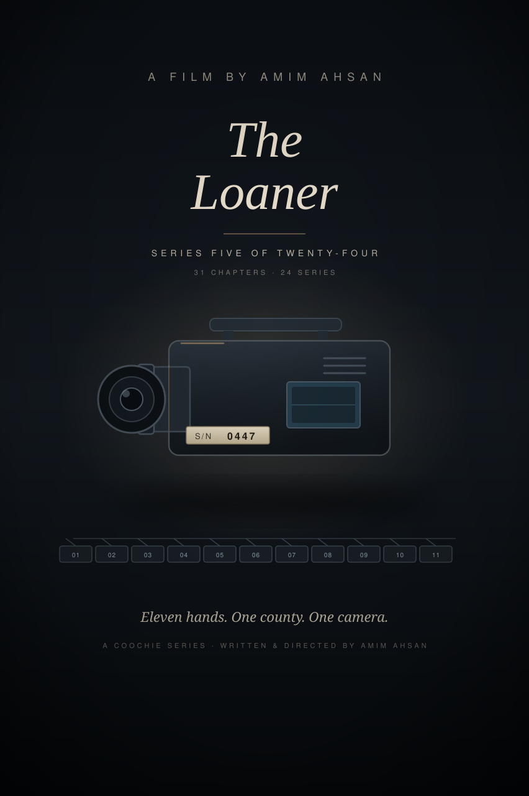

June Hollis
34, the shop
Cleans the sensor like a baby. Counts months the way other people count rent.

Series Five of Twenty-Four
Eleven hands. One county. One camera.
A camera worth more than a car goes out on rent eleven times in a year, and comes back with a film nobody ordered on it.
Series five · one year
Serial 0447 is a Marchetti, bought in 2009 for forty-one thousand dollars by a man who did not tell his wife. Nineteen years later his daughter runs the rental shop, cleans the sensor every morning, and cannot make the numbers work.
In one year the camera goes out eleven times: a wedding, a livestreamed church service, a high-school assignment, a house listing, a funeral, a music video and its second unit, a motel stakeout, a process serving, a flood, a community play, and one weekend it should never have gone out at all.
Everybody keeps the empty room. Nobody else watches it.
It comes back with forty-one clips on a card: not the year as it happened, but the year as a sixteen-year-old watched it — cut together, with one interview at the end that June Hollis was not supposed to see. Thirty-one chapters about an object that has no idea what it is being used for, and the people who keep pointing it at each other.
Twelve who hold it
34, the shop
Cleans the sensor like a baby. Counts months the way other people count rent.
71, the owner
Bought 0447 in 2009 and never told his wife. Says no by tapping the arm of a chair.
26, the counter
Checks the gear in and says the thing nobody wants said.
16, the last rental
Read the insurance form. Wanted to be a director. Took a camera into a care home.
38, the wedding
Leaves twenty minutes on every card and calls it a highlight reel.
60, the livestream
Nine in the pews and two on the internet, and calls it a congregation.
52, the AV cart
Rents what the district used to own. Teaches the difference between waiting and asking.
44, the listing
Forty-one houses in four years and one good listing away from her name on a window.
39, the funeral home
Shows eleven minutes three times a week. Knows that nobody cries with their face first.
51, the investigator
Sits for three hours to write down one plate, and asks the wrong brother the right question.
58, the county
Needs pictures or the state doesn't send money.
47, the buyer
Offers forty on a Thursday and is the only person in the county who knows what it is.
Three parts · five chapters a page
Full screenplay · INT. / EXT.
Part One — Rental
A cinema camera in a foam cutout, body the size of a shoebox, matte black, serial number stamped on the plate: 0447. JUNE HOLLIS, thirty-four, cleans the sensor with a swab, one pass, then a second because the first one made her nervous.
MARCUS
You clean that thing like it's a baby.
JUNE
It's worth more than the truck outside.
MARCUS
The truck outside is worth nine hundred dollars.
JUNE
Then it's worth more than seven trucks.
She sets it in the case, closes the latches, and writes on the rental form in block capitals: SERIAL 0447 — OUT.
The shop's logbook is older than June's career: a hardback ledger, columns for date, name, kit, and a column at the far right headed CONDITION, which her father filled in for nineteen years in the same blue pen.
On the wall, the framed photograph: GENE HOLLIS, fifty-one, holding serial 0447 on the day he bought it, standing in this room, grinning like a man who has just done something irresponsible.
MARCUS
Another email from the city. They want a number by Friday.
JUNE
Then give them a number. Give them the number that means we're thinking about it.
MARCUS
They've had that number for four months.
June opens the ledger to today's date, and there, at the top of the page in her father's handwriting from before the stroke, is a line she did not write.
JUNE
(quietly)
Dad.
Part One — Rental
DENNY BOYLE, thirty-eight, counts cash onto the counter in twenties, licking his thumb like a man in a film about a man counting cash.
DENNY
Three days. Saturday to Monday. I'll bring it back cleaner than I got it.
JUNE
Nobody brings it back cleaner. Bring it back on time.
DENNY
June. It's the biggest wedding in the county this year. Two hundred guests. The bride's father's a contractor.
JUNE
Then charge him for the second camera.
He laughs and takes the case. The bell over the door does what it has done since 2004.
String lights. A DJ. Two hundred people and a floor that has hosted every dance in this county since the war. Denny moves through it with the camera on his shoulder, and the camera — serial 0447 — records a room at 6400 ISO like it is daylight.
He finds the bride's father, a big man in a rented jacket, standing at the edge of the floor with a drink he has not touched.
DENNY
(off camera)
Mr. Ferris. Say something for the film.
FERRIS
I've been trying to think of something all night.
DENNY
Then say that.
Ferris looks into the lens. The lights go blue and then gold behind him.
Part One — Rental
Ferris takes the microphone. The room settles. The camera is the only thing still moving.
FERRIS
I built the house she grew up in with my own hands and I have never been able to fix the door at the top of the stairs. It sticks in August. It's still going to stick in August when you come over, and I want you to know that's not a door, that's a father-in-law.
Laughter. Somebody's glass goes over. The bride puts her hand over her mouth.
FERRIS
Her mother would have said it better and shorter. I've got the long version and I've got it for the rest of my life.
He stops. Looks at his daughter. Then at the floor, because he cannot do both.
FERRIS
That's it. That's the speech.
The kitchen: a steel sink, two women from the church washing glasses, a door propped open to the dark. Ferris is in there alone, holding the counter.
Denny comes in with the camera still on his shoulder, because he has learned that the good part is always after the speech.
DENNY
You all right?
FERRIS
Her mother died in March.
Denny lowers the camera. Then, after a moment, raises it again, because the man is still talking and that is the job.
FERRIS
She wanted to be here. She'd have been in that kitchen telling me to sit down and stop making it about me. So I'm standing in the kitchen.
Part One — Rental
Denny brought the camera back on Monday, four hours late, with a scratch on the case and a card still in it.
June is checking the sensor when the monitor fills with a kitchen.
MARCUS
He left twenty minutes on the card.
JUNE
He always leaves something on the card.
MARCUS
This is not something. This is a man in a kitchen.
On screen: Ferris, in the kitchen, twenty-two minutes, talking about his wife. The camera does not move.
JUNE
Does she know he kept this?
MARCUS
Denny gave her the highlight reel. This is not in the reel.
June watches to the end. Then she rewinds and watches the last four minutes again with her arms folded.
JUNE
Copy it. Put it on a drive and label it.
MARCUS
And do what with it?
JUNE
Nothing. Put it in the drawer with the others.
MARCUS
There are twelve drives in that drawer.
JUNE
Then it'll be thirteen.
She wipes the card and puts it back in the case, and the whole thing takes nine seconds, which is how long it takes to delete a man's wife.
Part One — Rental
Pastor Alton Reid, sixty, checks the laptop, the frame, the sound level. Shanice holds up a hand with three fingers and folds them down one at a time.
REID
Are we on?
SHANICE
We're on. There's four people watching.
REID
In the building or on the internet?
SHANICE
Both. Two and two.
REID
Then it's a congregation. Start the recording.
He steps into the light. The camera — worth more than the van in the lot — holds on a man in a robe talking to nine people and two strangers with a laptop.
After the service. Chairs stacked. Reid sits in the front pew with his shoes off, which he does not do in front of many people.
REID
You know what the camera's for?
SHANICE
So people who can't come can watch.
REID
So people who don't come can be asked. There's a difference. The first one is charity. The second one is an invitation, and it's harder, because an invitation can be refused.
Shanice looks at the frame on the laptop: an empty sanctuary, eleven pews, the camera still rolling.
SHANICE
Should I stop it?
REID
Leave it a minute. The room's nicer empty than we are.
Part One — Rental
Shanice is emptying the hymn racks. In the third pew, a card in handwriting she does not recognize.
SHANICE
(reading)
"For the man in the camera. I hope he gets home."
She turns it over. Nothing. No name, no date.
REID
Put it in the box.
SHANICE
It doesn't say who it's for.
REID
Then it's for whoever reads it. That's how a box works.
Shanice returns the camera herself, in the case, with the tripod plate still attached, which is the mark of an amateur and also of someone who was careful.
JUNE
Plate goes in the pocket.
SHANICE
Sorry. Sorry. It's my first time returning one of these.
June takes the plate off, drops it in the pocket, and hands her the receipt.
SHANICE
Can I ask — is the man who owns this okay?
JUNE
(after a beat)
He's at Riverbend. He had a stroke in April.
SHANICE
Then somebody's praying for him. It's in the box.
June looks at her for a long moment, then writes PAID IN FULL across the form, which she has never done.
Part One — Rental
MR. DUARTE, fifty-two, pulls the cart. KOFI, sixteen, walks beside it with his hands in his pockets, which is the closest thing to help he can offer without being asked.
DUARTE
The district cut the media budget by sixty percent, so we are renting this for two days instead of owning one for ten years.
KOFI
That's a bad deal.
DUARTE
That's a lease. Everybody in this building is on one.
He stops the cart outside room 12 and unlocks the door with a key that has a piece of tape on it that says AV.
KOFI
Mr. Duarte. What's it worth?
DUARTE
More than my car, less than my house, and if you drop it we will be paying it off until you're thirty.
Room 12: twenty desks, a whiteboard, a poster of a film set that says EVERYBODY STARTS SOMEWHERE, and a window with a view of the parking lot.
DUARTE
Assignment. One minute. One subject. You may not interview a teacher and you may not interview each other.
KOFI
Who's left?
DUARTE
That's the assignment.
Kofi looks out the window at the parking lot. Then at the camera on the cart. Then back out the window, where a man is sitting in a truck with the engine off.
Part One — Rental
Kofi's film. One minute. A static frame on a truck in a school lot. A man in the cab, eating a sandwich with the door open.
KOFI
(V.O.)
This is Mr. Odell. He delivers the milk. He's been doing it for twenty-six years and he has never been inside this building.
On screen, the man looks up at the school, chewing. Then he looks back at his sandwich.
ODELL
(on screen)
My daughter went here. I used to wave at her window. She never waved back, because you don't, at that age.
The film ends on the truck pulling away. The room is quiet. Duarte does not say anything for a moment.
DUARTE
Where did you put the camera?
KOFI
On the curb. Low. So he'd be looking down at it.
After the bell. Kofi is packing the cart. Duarte is writing in a gradebook.
DUARTE
You know what you did that the others didn't?
KOFI
Waited.
DUARTE
You waited and you didn't ask him to be interesting. That's the whole job. The rest is lenses.
Kofi lifts the camera out of the case to put it back, and stops. Reads the plate.
KOFI
Serial 0447.
DUARTE
Don't get attached. It goes back Friday.
Part One — Rental
Duarte is showing the principal Kofi's film on a laptop. Two other teachers lean in because a laptop in a staff room is a magnet.
PRINCIPAL
This is good.
DUARTE
This is the best thing a student has made in this building in nine years.
PRINCIPAL
Can we put it on the district channel?
DUARTE
It's a film about a milkman who's never been inside the school. It's not a recruitment video.
PRINCIPAL
Everything's a recruitment video. I don't make the rules. I make the newsletter.
Duarte closes the laptop. The fluorescent flickers twice, like it is agreeing with somebody.
Duarte wheels the cart back to the office to be picked up. Kofi walks with him again, hands out of his pockets this time, carrying the case.
KOFI
Can I ask you something dumb?
DUARTE
Those are the only questions worth the walk.
KOFI
How do you know if you're good, or if you're just the only one doing it?
Duarte stops the cart outside the office.
DUARTE
You don't. Not for about ten years. What you do is keep the camera pointed at something that isn't you and hope the difference shows up in the footage.
Part One — Rental
June cleans the camera. The same four movements, in the same order, which she has done maybe eleven thousand times.
The invoice under the magnet: RIVERBEND CARE — MONTHLY — $4,180.
MARCUS
(from the door)
You're still here.
JUNE
I'm always still here.
MARCUS
The Schenectady people emailed again. They'll give you thirty-eight for the body and the two lenses.
JUNE
Thirty-eight thousand.
MARCUS
Thirty-eight thousand. That's nine months at Riverbend.
June sets the camera in the case and latches it. Then she opens the ledger to a page from 2009 and reads her father's handwriting: 0447 out — Ferris wedding — return Mon. Cleaned. Runs like a dream.
JUNE
He wrote the same thing every time. "Runs like a dream."
MARCUS
Did it?
JUNE
It overheats in direct sun and the fan rattles at anything over 3200. He loved it more than the shop.
She closes the ledger. Puts the invoice in her bag. Turns off the bench lamp.
MARCUS
June. Nine months is nine months.
JUNE
I know what nine months is. I've been counting them since April.
Part Two — The County
Brenda moves a chair two inches. Then back one inch. Then she stands behind the camera and looks at the frame like a general.
BRENDA
This is the house. This is the one that gets me out of this county.
JUNE
(operating)
You're selling a house, not leaving.
BRENDA
June. I have sold forty-one houses in four years. I am one good listing from a brokerage with my name on the window, and this is the listing.
She looks through the viewfinder, adjusts the frame, and nods.
BRENDA
Wide. Slow. And don't put the neighbours in it.
The camera goes up the stairs. Brenda walks ahead, opening doors, narrating a life that is not hers.
BRENDA
Primary bedroom, ensuite, walk-in. And this is the little room — office, nursery, whatever you need.
The little room: pale blue walls, a growth chart still taped to the doorframe, three pencil marks with dates, the last one in 2019.
JUNE
Brenda.
BRENDA
(already moving)
We'll paint over it. They always paint over it.
June keeps the camera on the doorframe for four seconds longer than she needs to.
Part Two — The County
Brenda has gone to the car to take a call. June stays, because the light in the kitchen has gone the colour of the inside of an egg, and because there is a kettle on the counter.
She turns the camera on the kettle. Then on the mark on the wall. Then she opens a cupboard, which is empty except for a child's plastic cup.
BRENDA
(from the doorway)
What are you doing?
JUNE
Getting the room.
BRENDA
The room's empty. Empty sells.
JUNE
Empty sells to people who want to put their own life in it. This room already had one and somebody's going to feel it and not know why.
Brenda sits on the porch step with her tablet face down beside her. June packs the camera.
BRENDA
The family that lived here — the wife died. The husband's in assisted living in the city and the daughter's selling it from Ohio and she's never seen the inside.
JUNE
Then send her the four seconds with the growth chart.
BRENDA
That's not a listing.
JUNE
No. That's the thing the listing's for.
Brenda looks at the dark house for a while. Then she picks up her tablet and does not open it.
Part Two — The County
OWEN TATE, thirty-nine, spreads forty photographs on a table like a card trick.
OWEN
Eleven minutes. Music at the end. No photos of her in the last two years — the family asked.
JUNE
Why the last two years?
OWEN
Because that's what she looked like when she was ill, and they want to remember the other one. It's not a lie. It's a choice about which true thing to put on the wall.
June starts scanning. Owen stands behind her with his hands folded, which is a habit from work and also just who he is.
OWEN
You've done this before.
JUNE
My father's shop has been in this county for nineteen years. I've done everything before.
Twelve chairs. Fourteen people. A screen showing a woman in a garden in 1994, holding a hose, laughing at somebody off camera.
The daughter is in the front row with her hands in her lap, absolutely composed.
OWEN
(whispering, at the back)
Watch her hands.
JUNE
What?
OWEN
Nobody cries with their face first. It's the hands.
On screen, the woman turns and says something to the camera. The daughter's hands come apart.
Part Two — The County
Eleven minutes. A garden, a kitchen, a bowling alley, a dog that is dead too. Then a photograph that is not of the family at all: a man in a cap on a boat, holding up a fish.
The room makes a sound. The daughter leans forward.
DAUGHTER
That's Uncle Ray.
SON
(from the second row)
That's the wrong uncle.
DAUGHTER
That's Uncle Ray from the boat. Mom kept his picture in the drawer with the batteries.
The room laughs — the good kind, the kind that comes out of a funeral like a bird out of a bush. Owen's shoulders come down an inch.
The family has gone. Owen is stacking chairs. June is coiling cable.
OWEN
You left the fish in.
JUNE
I left the fish in.
OWEN
I checked the sequence twice. It wasn't in the sequence.
JUNE
It was in the box. It was a photograph in the box with the others. Somebody kept it.
Owen puts a chair against the wall and looks at her.
OWEN
That was the best eleven minutes I've shown in that room in five years and I show eleven minutes three times a week.
JUNE
It wasn't mine to leave in.
OWEN
No. It was hers. That's why it worked.
Part Two — The County
KJ MARLO, twenty-two, walks the length of the concrete floor toward the camera, rapping under his breath, then again with his chest out.
KJ
How's it look?
JUNE
Dark.
KJ
Dark is the point.
JUNE
There's dark and there's unlit. Right now you're unlit.
Duke appears at her shoulder with a phone in each hand.
DUKE
Whatever it costs, we've got it. We've got six hundred dollars and a car.
June moves one panel. Then the other. KJ turns into the light and becomes, immediately, a person you would look at.
KJ
(to the friends)
See that? That's the difference. That's why we're paying her.
DUKE
(quietly, to June)
We're paying you four hundred and the rest is for the smoke machine.
JUNE
Keep the smoke machine. Turn it off in twenty minutes or you'll have fog in the lens and a bill.
He grins at her like she has just said something cool, and she realises she has.
Part Two — The County
The car rolls through the fog at four miles an hour. Duke stands beside June with his hands jammed in his pockets.
DUKE
He's going to be big.
JUNE
Maybe.
DUKE
He's twenty-two and he's got the thing. You can see it in a frame. You're the one who said the light was wrong and he didn't argue, he just moved.
JUNE
That's not the thing. That's being twenty-two.
Duke counts money out of a fold in his coat and hands it over: four hundred, in twenties, slightly damp.
DUKE
The rest is Thursday.
JUNE
There is no rest.
DUKE
There's always a rest. It's just usually somebody else's.
Dawn. The smoke has gone. KJ is asleep in the passenger seat of his own car with his sunglasses still on. The two friends are asleep in the back.
June packs the camera in the open boot of her truck, and stops, and looks at the three of them.
DUKE
You want a coffee? There's a place opens at five.
JUNE
I've got a shop to open at eight.
DUKE
Then sleep in the shop.
JUNE
I do.
Part Two — The County
Lorna, fifty-one, has been parked here for three hours. She eats a sandwich with one hand and checks the frame with the other.
LORNA
This is the part nobody believes. Ninety percent of this job is sitting.
JUNE
(on the phone)
And the other ten?
LORNA
Writing down a licence plate in the dark and hoping the camera got it.
A man comes out of room seven. Gets into a truck. Drives away without lights for the first fifty yards.
LORNA
There he is. There's the man who says he was in Cleveland.
Lorna returns the camera. She stands at the counter too long, which is not something she does.
JUNE
Card's in the case?
LORNA
Card's in the case. And I want you to know I'm paying cash because the client is paying cash and I don't want a record.
JUNE
The rental's a record. It's a receipt.
LORNA
The rental's a camera on a shelf. What's on the card is a man's life.
She puts the cash down and leaves. June looks at the card in her hand for a while before she deletes anything.
Part Two — The County
Lorna checks the folder: a name, an address, a photograph. Then she looks at the house and at the man on the porch in a dressing gown, taking in the bins.
LORNA
(to herself)
That's not him. That's not him at all.
She gets out anyway. The camera keeps running, pointed at the porch, because it was left running and nobody stopped it.
LORNA
(off screen)
Excuse me. Are you Mr. Sutter?
MAN
(off screen)
I'm his brother. He's inside. He's not well.
A pause. Then Lorna's voice again, quieter, doing arithmetic with her own licence to carry a folder.
June is playing the clip on the monitor. Lorna stands behind her with her arms folded.
LORNA
I served the wrong brother. The papers are on the wrong man's table and it's my name on the affidavit.
JUNE
Does the camera help you or hurt you?
LORNA
It proves I asked the right question and got the wrong answer. Which is worse, because now it's on a card.
She looks at June. Not at the monitor. At June.
LORNA
Wipe it.
JUNE
It's your rental. It's your footage.
LORNA
Then wipe it. Please.
June's hand stays on the mouse. The clip loops. The man in the dressing gown takes in the bins again and again.
Part Two — The County
Water where the road was. A stop sign with only its top half above the surface. RUTH-ANNE COBB, fifty-eight, stands in the rain with a clipboard she has given up on and a phone in a plastic bag.
RUTH-ANNE
Get the waterline on the Ellis place and then get the culvert. The county needs pictures or the state doesn't send money.
JUNE
How much money?
RUTH-ANNE
Enough to fix the road, which means enough to matter, which means they will want it documented like a crime scene.
June films the waterline: a brown stain across a porch, four feet up. Then a child's bicycle against a fence, half in the mud.
An old woman on a porch with a blanket around her shoulders, being looked at by a neighbour. Ruth-Anne crouches in front of her.
RUTH-ANNE
Mrs. Ellis. I need to ask you four questions and then I'll leave you alone.
MRS. ELLIS
Ask them standing up. I'm not an invalid, I'm wet.
Ruth-Anne stands up. June keeps the camera low, at the height of the porch, so the woman is looking slightly down at all of them.
RUTH-ANNE
(afterwards, walking away)
You put the camera down there on purpose.
JUNE
She's eighty-one and she's sitting. I'm not going to film her from above like a problem.
Part Two — The County
The camera is open on the bench like something in surgery. The tech, DEV, thirty-four, has a torch in his teeth.
DEV
Water got in at the top plate. Not a lot. Enough.
JUNE
Can you save it?
DEV
I can save it. The question is whether you want to pay to save it.
JUNE
How much.
DEV
Nineteen hundred. And it'll never be a rental camera again. Rentals get dropped, and dropped cameras get sold to schools.
June looks at the body on the bench: serial 0447, open, ordinary, expensive.
The insurance form: nine pages, a box for the serial number, a box for the date of loss, a box that says DESCRIBE THE CIRCUMSTANCES.
June writes: Rented to county emergency management for flood documentation. Rain. Not negligence.
MARCUS
They'll deny it.
JUNE
Then they'll deny it in writing and I'll have a piece of paper that says I tried.
MARCUS
The premium's already fourteen hundred a year. If we claim, it goes up.
June signs the form. Then she puts the pen down and looks at the framed photograph on the wall: her father, fifty-one, holding this camera like a trophy.
JUNE
It's insured for forty-two. The whole shop is insured for forty-two.
MARCUS
That's what it costs to be in this business.
JUNE
No. That's what it costs to stay in it.
Part Two — The County
HANK MOREAU, sixty-three, sits in the back with the camera on a tripod beside him, watching his own play through a monitor because he cannot watch it any other way.
HANK
This is the last performance. The building's been sold to a church that needs a youth hall.
JUNE
So this is the record.
HANK
This is the record. Twelve people who've been rehearsing since August and a man in the third row who's seen it five times.
On stage, a girl in a white dress climbs a ladder and says a line about the moon. The follow spot misses her by a foot.
HANK
(into the headset)
Spot. Spot. She's on the ladder, not in the kitchen.
After the curtain. The company stands in a half-circle on the stage, in costume, holding plastic cups.
HANK
I've directed in this room for thirty-one years. I've done forty-two plays and I have never once had a full house.
ACTOR
How many tonight?
HANK
Fifty-six. And a camera.
He raises his cup. They raise theirs. The camera, on the tripod at the back, keeps rolling through the toast because nobody remembered to stop it.
HANK
(to June, quietly)
Keep the whole thing. Including the spot missing her. That's the play.
Part Three — The Card
KOFI
Mr. Duarte said you might rent to me. Personally.
JUNE
Mr. Duarte is a teacher with a school purchase order. You're sixteen with a jacket.
KOFI
I've got three hundred dollars. I saved it from the summer.
JUNE
The insurance excess alone is four thousand.
KOFI
I know. I read the form.
June stops. Looks at him properly for the first time.
JUNE
You read the form.
KOFI
It's on the counter. It says serial 0447 and it says insured value forty-two thousand. I read it while you were in the back.
June takes the camera out of the case and sets it on the counter, which is not where a forty-two-thousand-dollar camera goes.
JUNE
Weekend. Back Monday by noon. If it leaves the county I will find out, and if it gets rained on I will find out, and if you put it on a tripod on a gravel road and walk away, I will find out.
KOFI
Yes ma'am.
JUNE
And I'm not taking your three hundred dollars.
KOFI
Why not?
JUNE
Because I'd have to write a form for it, and if I write a form then the insurance is on you and the insurance is a joke.
She hands him the case without writing anything, which is the mistake the entire rest of the series is built on.
Part Three — The Card
Kofi sets the case on the counter at 11:40, twenty minutes early. He looks like a boy who has not slept and has been trying to decide something.
JUNE
Anything broken?
KOFI
No.
JUNE
Anything wet?
KOFI
No.
He stands there. Then he says, all in one breath:
KOFI
There's a card in it. It's not mine. I mean it is mine, I put it in, but the footage isn't only mine. I found the other card in the pocket of the case and I watched it and then I did something and I'm sorry.
June opens the case. In the media slot, a card with a strip of tape on it that says, in a sixteen-year-old's handwriting: WATCH ALL OF IT.
She looks at Kofi. He does not run, which is somehow worse.
JUNE
How many clips?
KOFI
Forty-one.
JUNE
Of what?
KOFI
Of the year. Of everybody who used it. I had it for two days and I spent one of them watching and the other one filming the last thing.
June puts the card into the reader. The monitor fills with a wedding.
Part Three — The Card
Clip one: the Ferris wedding, shot properly, the father's speech, the bride barefoot. Then — the part Denny deleted — the kitchen, twenty-two minutes, a man talking about his wife.
MARCUS
That's the drive in the drawer.
JUNE
That's the drive in the drawer.
Clip two: the church livestream, and then forty seconds of empty sanctuary, morning light on eleven pews, no sound but the building.
MARCUS
He kept the empty room.
JUNE
Everybody keeps the empty room. Nobody else watches it.
Clip nine: the funeral home, the fish, the laugh. Clip twelve: the warehouse, KJ Marlo turning into the light. Clip nineteen: the flood, the waterline, the bicycle.
June is not moving. Marcus has stopped asking questions.
JUNE
He's cut it. It's not raw. He's been editing for two days.
MARCUS
A sixteen-year-old.
JUNE
A sixteen-year-old with a forty-two-thousand-dollar camera and no supervision.
Clip twenty-six begins with a room she knows: Riverbend Care, second floor, the window with the bird feeder outside it.
June's hand goes flat on the bench.
Part Three — The Card
June puts a tablet on the desk and plays forty seconds: an empty sanctuary, morning light, eleven pews.
SHANICE
I left it running.
JUNE
You left it running and a sixteen-year-old kept it and cut it into a film about this county.
REID
Play it again.
She plays it again. Reid watches the empty room with his hands folded, the way he watches everything.
REID
I've pastored in that room for nineteen years. I've never once seen it from there.
SHANICE
It looks like it's waiting for something.
June takes the prayer box off the cabinet and turns it over. Cards slide out onto the desk: forty, fifty, more.
JUNE
Which one's mine?
SHANICE
They don't have names. That's the point.
June reads them one at a time. A hip. A son in Ohio. A dog. A marriage. A man's eyesight.
Then one in pencil: For the man in the camera. I hope he gets home.
REID
You can take it. It's addressed to him.
June folds it once and puts it in the inside pocket of her coat, which is where she keeps the logbook key.
Part Three — The Card
JUNE
How did you get into Riverbend?
KOFI
I walk in. Nobody stops a kid with a camera. They think you're doing a project.
JUNE
And you asked him questions.
KOFI
I asked him if he wanted to say anything to the person who owns the camera.
JUNE
Why.
KOFI
Because there's a picture of him on your wall holding it, and because my grandfather was in that place for two years and nobody ever asked him anything.
June sits back. The shop is very quiet.
JUNE
You understand what you did.
KOFI
I took a camera into a care home and filmed a man who couldn't get up.
JUNE
You filmed my father without asking me.
KOFI
I asked him.
JUNE
He can't say more than four words in a row.
KOFI
He said yes twice.
June looks at him for a long moment. Then she opens the ledger and turns it around.
JUNE
There's no line for you in this book. I didn't write one. That's my mistake, not yours. But every single thing that came back to this shop got a line, and now there's a card in my reader with forty-one clips on it and no paperwork at all.
KOFI
Then write the line.
Part Three — The Card
MARCUS
You gave a forty-two-thousand-dollar camera to a sixteen-year-old with no form.
JUNE
Yes.
MARCUS
If he'd dropped it, the insurance wouldn't have paid, the shop would have been finished, and you'd have been the one who did it. Not him. You.
JUNE
I know.
MARCUS
And you'd have done it anyway.
JUNE
I did do it anyway.
Marcus stands there with his coat half on. Then he takes it off and sits down on the stool.
June writes in the ledger, in block capitals, in the same pen her father used:
14 Nov — KOFI (school) — 0447 body + 2 lenses — no charge — returned Mon. Cleaned. Runs like a dream.
MARCUS
"Runs like a dream."
JUNE
It's what he wrote.
MARCUS
It rattles at 3200.
JUNE
Then it rattles like a dream.
She closes the book. Marcus laughs — the first laugh in the shop in this whole series — and it goes on a beat too long.
Part Three — The Card
VIKRAM SOOD, forty-seven, handles the camera the way a jeweller handles a stone: quickly, expertly, without affection.
VIKRAM
Thirty-eight for the body and the two lenses. I'll take the batteries and the cards at valuation. Call it forty.
JUNE
Forty-two is the insured value.
VIKRAM
Insured value is what you tell an insurer. Forty is what a man with a van and a cheque book offers you on a Thursday.
He sets it down and looks at the room: the pegboard, the ledger, the photograph on the wall.
VIKRAM
This shop hasn't turned a profit since 2019 and you know it. I'm not insulting you. I'm the only person in this county who knows what that thing is.
The invoice on the bed table, under a glass of water: $4,180. Gene Hollis, seventy-one, asleep in the chair by the window with a blanket over his knees.
June sits with him. She has the folder from Vikram in her bag and does not take it out.
JUNE
A man offered me forty thousand dollars today for the camera.
Gene's eyes open. He looks at her. Then at the window.
GENE
(slowly)
Which one.
JUNE
The Marchetti. 0447.
He is quiet for a long time. Then he lifts one hand and taps the arm of the chair twice, which is how he has said no since April.
Part Three — The Card
The clip is nine minutes long. Gene Hollis sits in the chair by the window. Off camera, a boy's voice.
KOFI
(off camera)
What's the camera?
GENE
Marchetti. Italian. Bought in... two thousand nine. Forty-one thousand dollars and my wife didn't speak to me for a week.
KOFI
(off camera)
Was it worth it?
Gene laughs, which turns into a cough, which he waves away with one hand.
GENE
It's been to four hundred weddings and two floods and one funeral home and a music video where a boy wore sunglasses at night. Worth it.
He looks out of the window at the bird feeder.
GENE
Ask me the other thing. The one you came for.
KOFI
(off camera)
Does she know?
A long pause. Gene's hand finds the arm of the chair.
GENE
She thinks she's keeping it open for me. She's keeping it open for her. There's a difference and it's the whole... it's the whole thing.
KOFI
(off camera)
What should I tell her?
GENE
Tell her: sell the camera. Don't sell the logbook.
He stops. Breathes. Tries again, and this time it comes out clean.
GENE
And tell her she's better than me. She's been better than me since 2014 and I never said it because a man doesn't say it.
The bird feeder moves. The clip ends on Gene looking at it, and the last thing on the card is four seconds of a sixteen-year-old's hand reaching in to stop the recording.
Part Three — The Card
Thirty people in a rental shop. Denny Boyle at the back, embarrassed. Ferris, the father of the bride, in his work coat. Owen Tate with his hands folded. Brenda Salas. Lorna Beck, arms crossed, near the door. Shanice and Pastor Reid. Hank Moreau. Ruth-Anne Cobb. KJ Marlo with his hood down.
Kofi stands by the projector with his hands in his pockets.
JUNE
This is a film about this county, made by a sixteen-year-old with a camera he shouldn't have had.
KOFI
It's about eleven people who all used the same camera in one year and never met each other.
DENNY
(from the back)
Can we not put the kitchen in it?
JUNE
The kitchen's the best part, Denny.
The film runs twenty-six minutes. The wedding, the sanctuary, the milkman, the growth chart, the fish, the warehouse, the waterline, the play, the motel, the care home.
When it ends, nobody claps for a second. Then Owen Tate starts it, and it goes around the room like weather.
VIKRAM
(from the doorway, coat on)
Is the camera still for sale?
JUNE
The camera's for sale.
VIKRAM
Forty.
JUNE
Forty. And I keep the logbook and the cards.
Vikram looks around the shop at thirty people in coats, and nods, once, the way a man nods when he has understood that he is not the main character.
Part Three — The Card
A rental form on the counter. Serial number box: 0612. Name: KOFI ADJEI. Kit: body, 2 lenses, 3 batteries. Charge: $60.
KOFI
Sixty dollars.
JUNE
Sixty dollars. That's the rate for a student, and it's on a form, and the form means the insurance is on me, which means I'm the one who's nervous instead of you.
KOFI
What's it for?
JUNE
The county's paying for a film about the flood. Ruth-Anne got a grant and the grant says local vendor, and I'm the local vendor.
Kofi signs. June countersigns. Then she writes the line in the ledger in block capitals:
8 Dec — KOFI (county) — 0612 — $60 — runs like a dream.
He picks up the case. At the door he turns around.
KOFI
June. The old one. 0447. Where's it going?
JUNE
A rental house in the city. It'll be on a shelf with two hundred others and nobody will ever know it was in a flood.
KOFI
That's sad.
JUNE
It's a camera. It's got one job and it's going to keep doing it.
She looks at the wall: the photograph of her father at fifty-one, grinning, holding a camera that is now in a van somewhere on Route 6.
JUNE
And it's not the only thing in this shop that did its job.
She takes the prayer card out of her coat pocket and pins it to the pegboard, next to the key hooks, where the next person will see it and not know what it means.